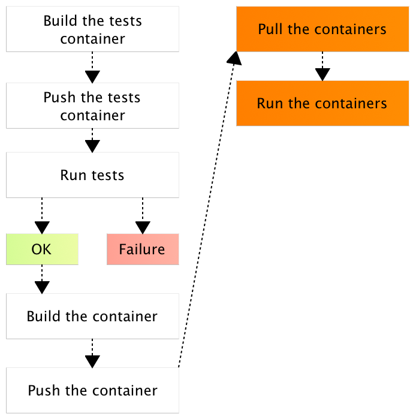
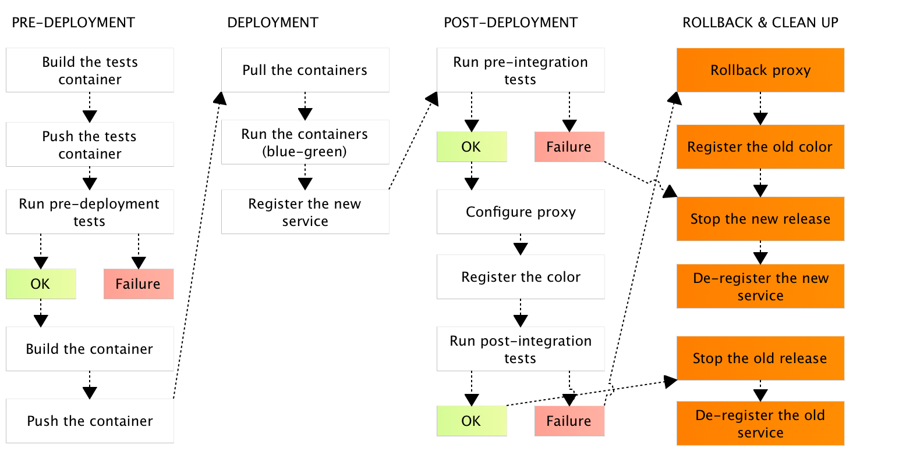

Continuously Deploying Microservices
Viktor Farcic
@vfarcic
TechnologyConversations.com
CloudBees.com
Viktor Farcic


Facing the truth
How long would it take your organization to deploy a change that involves just one single line of code?
Do you do this on a repeatable, reliable basis?
Nirvana
git push = last manual action
Fully automated continuous deployment pipeline
Microservices
Docker containers
Continuous Deployment Pipeline
What?
Steps executed on each commit
Continuous Deployment Pipeline
Why?
Deploy a service to production
Continuous Deployment Pipeline
Why?
Eliminate humans from the process
Continuous Deployment Pipeline
Why?
Cost, TTM, reliability, ...
Continuous Deployment Pipeline
Why?
Let machines do what they do best
Microservices
What?
Small, single-purpose, ...
Microservices
Why?
Big is hard to develop
Microservices
Why?
Big is very hard to test
Microservices
Why?
Big is extremely hard to deploy
Containers
What?
Immutable, lightweight, ...
Containers
Why?
Virtual machines are obese
CD Steps
- Test
- Build
- Deploy
Testing
Testing
Unit tests
- Unreliable
- Do not prove much
- TDD == development process
- TDD != testing technique
Testing
Functional tests
- Infrastructure problems
- Unknown whether it works inside the system
Testing

Building
- We know how to do it
- Infrastructure?
Building

Deployment
- It's a cluster, not a server
- Infrastructure?
Deployment
Jenkins Pipeline
CD defined as code
node("cd") {
git "https://github.com/vfarcic/go-demo.git"
stage "test"
sh "docker-compose -f docker-compose-test.yml run --rm unit"
stage "build"
sh "docker build -t vfarcic/go-demo ."
stage "deploy"
withEnv(['DOCKER_HOST=tcp://swarm-master:2375']) {
sh "docker-compose up -d"
sh "docker-compose ps"
}
}Jenkins Pipeline
CD defined as code

The End
Deployment
==
Downtime
Deployment
Blue-green deployment
requires
proxy
Deployment
Proxy
needs to be
dynamic
Deployment
Dynamic
==
0 configuration (files)
Deployment
0 configuration (files)
==
Service discovery
Deployment
Service discovery
==
Registry + registration + discovery
Deployment (revisited)

Testing
(before production)
==
unwarranted optimism
Testing
Blue-green deployment
enables
production testing
before and after proxy reconfiguration
Testing (revisited)

Rollback
Only if the flow fails
Afterwards, only roll forward
Rollback
Failed flow
==
Unchanged production
Rollback
Pre-deployment tests
==
No action
Rollback
Pre-integration tests
Proxy still configured with the old release
Stop the new release
Remove service data
Rollback
Post-integration tests
Proxy configured with the new release
Reconfigure the proxy
Stop the new release
Update service data
Rollback
Rollback
Databases?
Backward compatibility
Short iterations
Where to run?
In production, if necessary
No SSH
Where to run?

The End
Monitor
React
Prevent
Automate
Tools & architecture
Architecture
Microservices
Immutable deployments
Containers
Tools
Proxy

Docker Flow: Proxy
Tools
Cluster orchestrator


Tools
Orchestrator

Docker Flow
Viktor Farcic
@vfarcic